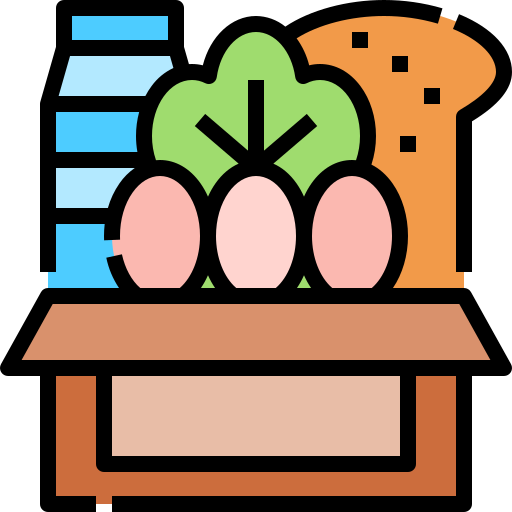

<body>
  <nav>
    <nav class="navbar navbar-expand-lg bg-body-tertiary" data-bs-theme="dark">
      <div class="container-fluid">
        <i></i>
        <a class="navbar-brand" href="/"> Abel Panta Chira</a>
        <button class="navbar-toggler" type="button" data-bs-toggle="collapse" data-bs-target="#navbarNav" aria-controls="navbarNav" aria-expanded="false" aria-label="Toggle navigation" >
          <span class="navbar-toggler-icon"></span>
        </button>
        <div class="collapse navbar-collapse" id="navbarNav">
          <ul class="navbar-nav">
            <li class="nav-item">
              <a class="nav-link active" aria-current="page" routerLink="/Login">Login</a>
            </li>
            <li class="nav-item">
              <a class="nav-link" routerLink="/Usuario" >Usuario</a>
            </li>
          </ul>
        </div>
      </div>
    </nav>
    
    <router-outlet></router-outlet>
  </nav>
</body>


